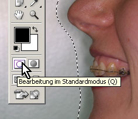
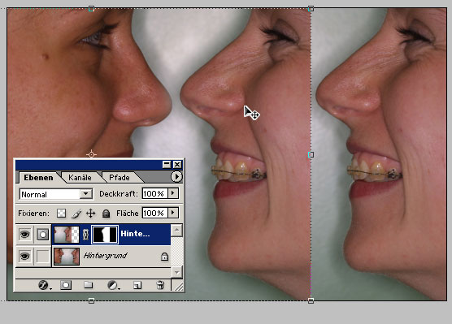

Zuerst das Originalbild und das Ergebnis als Photoshop- und JPEG Datei (Bei der Photoshop-Datei ist der Bildausschnitt noch nicht angepasst, ich hab' so viel wie möglich 'drangelassen)
Und so wird's gemacht:
Bild öffnen
Hintergrundebene duplizieren
In den Maskierungsmodus wechseln ( Q)
Das Pinsel-Werkzeug (B) und eine große Spitze mit unscharfem Rand wählen.
Jetzt mit dem (schwarzen) Pinsel alle Bereiche markieren, die später undurchsichtig sein sollen.
Den Maskierungsmodus beenden (Q). Die eben rot markierten Bildteile sind jetzt ausgewählt.
Jetzt mit einem Klick auf den "Ebenenmaske-hinzufügen"-Knopf alle nicht markierten Teile der Ebene durchsichtig machen.
Mit ausgewähltem "Verschieben"-Werkzeug (V) können die beiden Köpfe dichter zusammengeschoben werden.
Jetzt Steffis Kopf etwas drehen (immernoch mit dem "Verschieben"-Werkzeug. Wenn der Winkel stimmt mit Enter bestätigen.
Wenn die Transparenz noch nicht ganz stimmt:
Die Ebenenmaske zur Bearbeitung auswählen
und jetzt mit einem Pinsel Bildbereiche durchsichtig (schwarz) oder undurchsichtig (weiß) machen.
Mit dem Freistellen-Werkzeug überflüssige Bildteile wegschneiden
Speichern
{kind=link}
{kind=link}